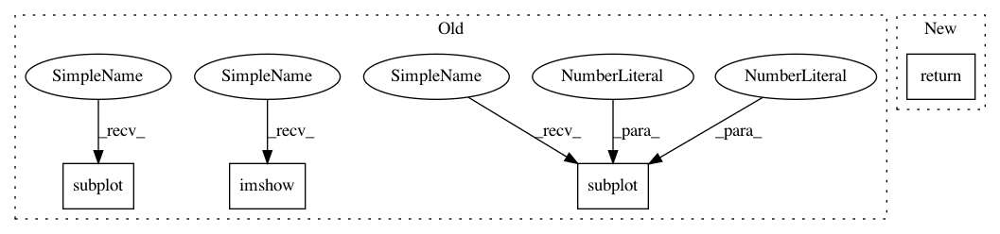

0d6fd37f57b187395ee3addc8d5a758337830f60,dipy/viz/regtools.py,,overlay_slices,#Any#Any#Any#Any#Any#Any#Any#,313
Before Change
// Create the figure
plt.figure()
plt.subplot(1, 3, 1).set_axis_off()
plt.imshow(ll, cmap=plt.cm.gray, origin="lower")
plt.title(ltitle)
plt.subplot(1, 3, 2).set_axis_off()
plt.imshow(colorImage, origin="lower")
plt.title("Overlay")
plt.subplot(1, 3, 3).set_axis_off()
plt.imshow(rr, cmap=plt.cm.gray, origin="lower")
plt.title(rtitle)
After Change
if fname is not None:
fig.savefig(fname, bbox_inches="tight")
return fig
In pattern: SUPERPATTERN
Frequency: 3
Non-data size: 4
Instances
Project Name: nipy/dipy
Commit Name: 0d6fd37f57b187395ee3addc8d5a758337830f60
Time: 2015-02-04
Author: arokem@gmail.com
File Name: dipy/viz/regtools.py
Class Name:
Method Name: overlay_slices
Project Name: nipy/dipy
Commit Name: 0d6fd37f57b187395ee3addc8d5a758337830f60
Time: 2015-02-04
Author: arokem@gmail.com
File Name: dipy/viz/regtools.py
Class Name:
Method Name: plot_slices
Project Name: nipy/dipy
Commit Name: 0d6fd37f57b187395ee3addc8d5a758337830f60
Time: 2015-02-04
Author: arokem@gmail.com
File Name: dipy/viz/regtools.py
Class Name:
Method Name: overlay_slices
Project Name: khaotik/DaNet-Tensorflow
Commit Name: f391751e1c6cf648a9cf6b75149bc7686541404b
Time: 2017-08-10
Author: junkkhaotik@gmail.com
File Name: main.py
Class Name:
Method Name: main